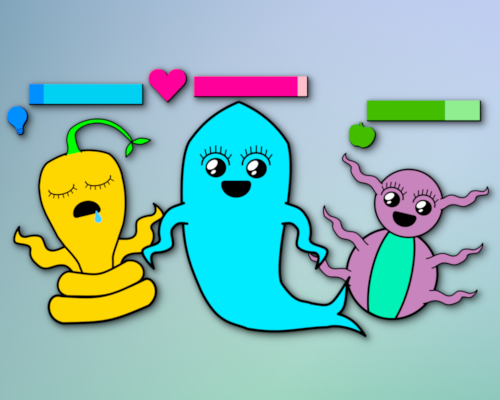
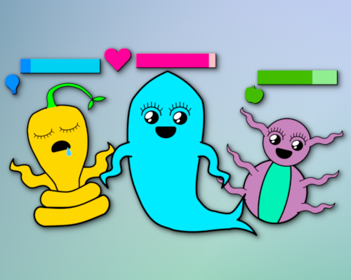
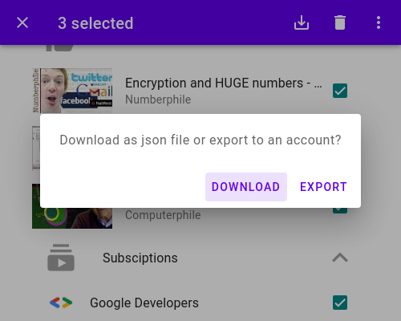
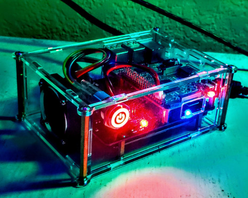

GitHub Virtual Pet App
Feb 16 2021
A Node Express app running on Heroku. Uses Octokit and GraphQl to care for pet using GitHub data. Testing done with Superagent.
I am a software engineer and security researcher.
I primarily code in JavaScript and Python, although I prefer functional languages and am learning more for various purposes.
I have little interest in Microsuck Winblows outside of exploitation.
Currently I am working on web application security and binary reversing.


A Node Express app running on Heroku. Uses Octokit and GraphQl to care for pet using GitHub data. Testing done with Superagent.
A Python 3 app running on Heroku. Migrates data from user accounts using the YouTube Data API, OAuth 2.0, and Material Design.
How to build your own personal OpenVPN server on Raspberry Pi with CentOS, ddclient for dynamic DNS, and EasyRSA for encryption.
This article covers all the steps to setting up a digispark attiny85 board to function as a usb rubber ducky using arduino!

Email: paige@paigevenuto.com
Skype: live:paigevenuto
linkedin: https://www.linkedin.com/in/paigevenuto/
Github: https://github.com/paigevenuto